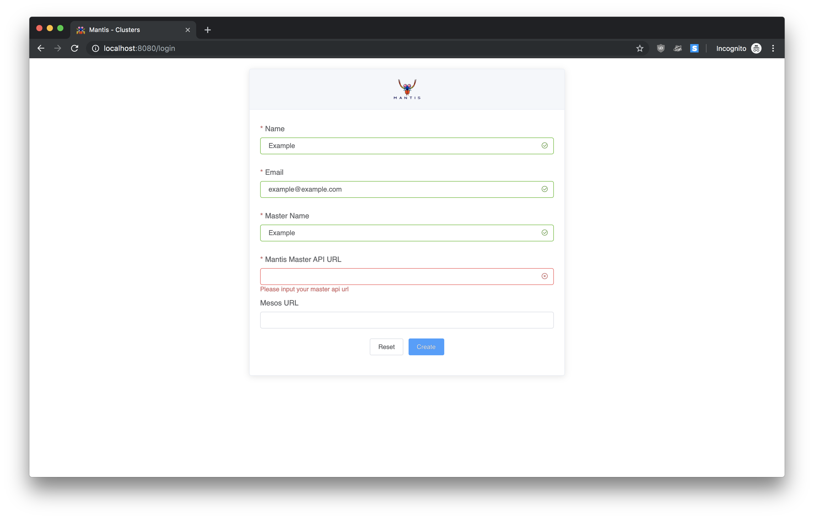
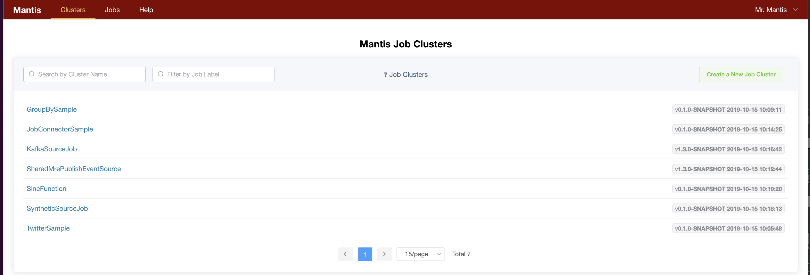

Spinning up your first Mantis cluster using Docker¶
Prerequisites¶
Install Docker on your local machine (if you don't already have it)
Bootstraping your first Mantis Cluster in Docker¶
Download the docker-compose file¶
Download the docker-compose.yml to a local folder mantis
$ cd <mantis>
$ docker-compose -f docker-compose.yml up
This starts up the following Docker containers:
- Zookeeper
- Mesos Master
- Mantis Master
- Mantis API
- Mesos Slave and Mantis Worker run on a single container (mantisagent)
- A simple hello world web application that sends events to Mantis
- A simple Java application that sends events to Manits
Mantis Admin UI¶
The Mantis Admin UI allows you to manage your Mantis Jobs.
Open the Mantis UI in a new browser window.
Fill out the Registration form as follows

- Name:
Example - Email:
example@example.com - Master Name:
Example - Mantis API URL:
http://localhost:7101 - Mesos URL:
http://localhost:5050
Click on Create
The Mantis Admin page should be pre-populated with all the Mantis examples.

Try out Mantis Jobs¶
Now that you have setup a Mantis cluster locally try running some of the preconfigured Mantis samples
-
Sine Function Sample - A simple job that generates x and y coordinates of a sine wave.
-
Twitter Sample - Connects to a twitter stream using consumer and token keys specified and performs a streaming word count.
-
On Demand sourcing data from external apps sample - Demonstrates how Mantis Jobs can pull events on demand from external applications.
Next steps.
-
Setup Mantis in AWS and run the samples
-
Learn to write your own Mantis Jobs
To teardown the Mantis cluster, issue the following command
$ cd <mantis>
$ docker-compose -f docker-compose.yml down